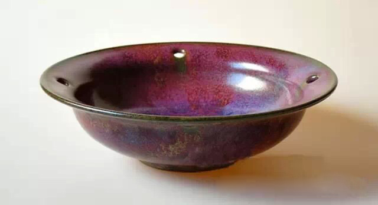
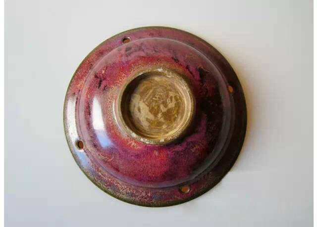
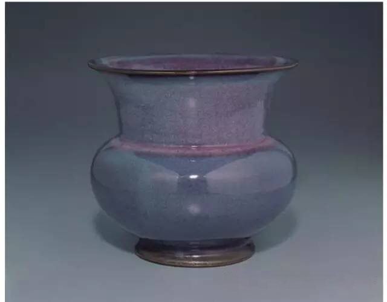
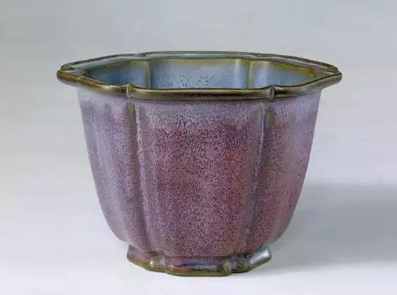
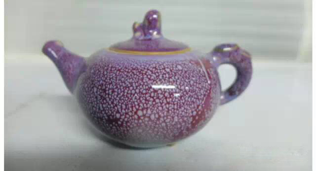
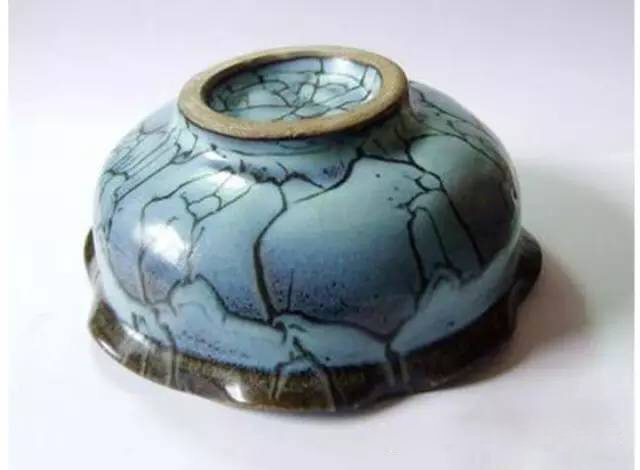
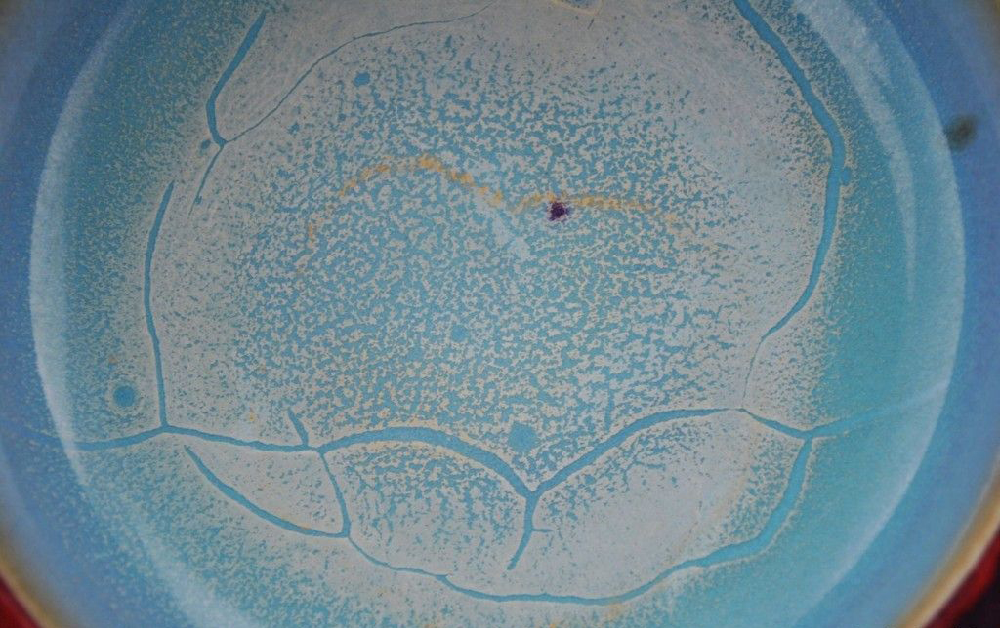
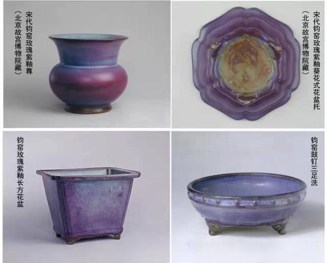

交易中心
交易中心
 交易指南
交易指南
 普洱档案
普洱档案
 普洱资讯
普洱资讯
 下载中心
下载中心
 活动频道
活动频道

入窑一色出窑万彩：宋代五大名窑之钧窑
2016-02-25 17:37 来源：蒙顶山普洱

钧窑，是中国宋元时期的北方瓷窑。因在钧州境内（今河南禹州）故名，亦称“均窑”、“钧州窑”。钧窑始于唐而盛于宋，在民间素有“入窑一色，出窑万彩”、“钧窑无双、窑变无对”、“家财万贯不如钧瓷一件”等美誉，后世历代均有仿造。

入窑一色，出窑万彩
钧窑独特魅力莫过于“入窑一色，出窑万彩”窑变的不可预测性，以及“钧窑无双、窑变无对”成品的惟一性，衍生出如梦如幻的色彩意境让人痴迷。钧瓷属于窑变系的瓷器，理论上讲，它的呈色在入窑之前不能控制。烧制中窑变自然形成绚烂奇妙之色。所谓“窑变”，是指进了窑以后，在烧造中才产生的变化，人力不可控制。

近地取材的孔雀石，烧出别样的红
首先，我们对陶瓷要有一个基本常识的了解：陶瓷上所有的颜色都是金属在高温下呈现的颜色，比如青色是用铁来呈色。
钧窑为什么使用铜作为呈色剂呢？因为当时钧州的神（音后）镇出产孔雀石，孔雀石含有大量的铜。所以就近取材，用铜做呈色剂，使钧窑在高温下呈现出红色，这说明当时已经能充分掌握铜元素的还原技术。

加点铜，釉色千变万化
窑变釉是一种艺术釉，变化最多，色彩最丰富，形态也最复杂。它的最初出现完全是偶然的。而宋代首创釉中加入适当铜金属，长期实践瓷工逐渐认识并掌握了铜红的成色技艺。以铜为呈色剂，在高温下烧成玫瑰紫、海棠红等紫红色釉，美如晚霞。
可以说这是钧窑对中国陶瓷史巨大的贡献，这个贡献在长达数百年的时间里都是辉煌的。

制作过程
瓷坯先经素烧稍冷后上釉正烧，釉层较厚；
由于各种元素重量不等，釉面沸腾时，重量较轻的向上翻滚，比重大的元素如铜、铁则向下流淌，在釉层里形成深色的沟槽；
窑变慢慢熄灭，釉面逐渐停止沸腾，高低补齐之后，釉层里往往出现不规则的流动线条，屈曲蟠蜒，如“蚯蚓走泥”。这个特点在那个时代为钧窑独有；
器物底足施满釉后又抹掉，烧成后成为棕黄色。由于钧瓷釉质肥厚失透，刻、划、印花不宜显露，所以钧瓷以釉色取胜。

“蚯蚓走泥纹”不是钧瓷的绝对怒鉴定特征
民国以前，宋钧鉴定有绝对特征“蚯蚓走泥纹”。
蚯蚓走泥纹的形成，是因为钧瓷的釉非常厚，能够厚达七八毫米。釉不仅厚，还黏稠，所以在冷却的时候，有些介乎于开片和非开片之间的那种被釉填平的地方，会形成像雨过天晴以后，蚯蚓在湿地爬过的痕迹，被文人形象地比喻为“蚯蚓走泥纹”。
这个特征在民国以前无法仿出来。最近这些年，河南神镇的窑厂不停攻关，已经能把过去的特征准确地仿出来。所以蚯蚓走泥纹在今天已经不是鉴定的绝对特征了。

器型碗盘居多，但以花盆最为出色
钧窑是宋代五大名窑之一，所产器型以碗盘为多，但以奇花异草用的各式花盆与盆托最为出色：


- 云南茶山的普洱茶产量有多少？2016-03-08
- 普洱茶守护心脑血管健康，并降血糖!2016-03-04
- 柴为春茶头桩事，臻味号做茶选“柴”有讲究2016-03-02
- 世界各国奇特的饮茶方式2016-03-02
- 古树茶的6个小秘密2016-02-29